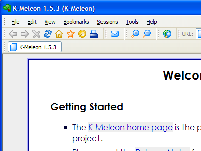

Phoenity
Phoenity was once the default theme for K-Meleon. It was created by artist Lim Chee Aun in collaboration with the K-Meleon development team. It was designed originally for lower resolution monitors and should still work fine on older systems. Its layout is very clean and because it was tested as the default theme, it makes a perfect template if you're creating a classic-style theme for K-Meleon. Current versions of K-Meleon are backwards compatible with this old style. For new style of themes, download High Resolution to use as a reference and template. To try out Phoenity:
-
Download the .zip file below.
-
Extract the .zip file and place the Phoenity folder in your K-Meleon/skins/ folder or profile/skins/ folder.
-
Open K-Meleon and press F2 to open the preferences window. Choose the Phoenity skin and set your toolbar size to 16.
-
Restart K-Meleon for changes to take affect.
Download Phoenity
Links

↑ K-Meleon Tools Home ↑
The Phoenity icon set and the official Phoenity theme for K-Meleon were created by Lim Chee Aun © 2010. The theme and icons are available under the Creative Commons Attribution-Noncommercial 2.5 Generic license. Any changes made to update Phoenity are also available under this license.